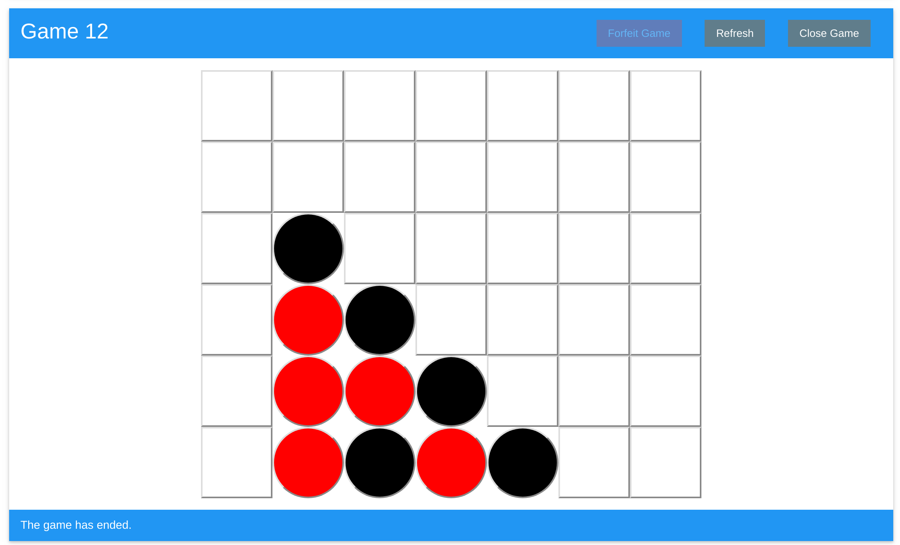
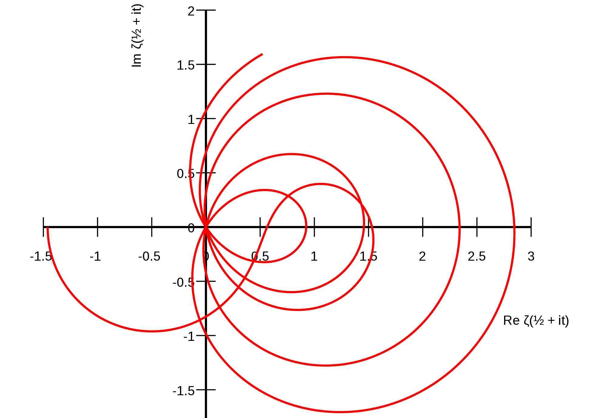

Computer Science student at Northeastern University
View ResumeProjects
Ethereum Connect Four
Play game View on GitHub
Play Connect Four on the Ethereum blockchain! A smart contract autonomously manages the current participants of a game, ensures the validity of moves made by a user, and rewards the winner of a game with a payout. Currently deployed on Ropsten testnet.
Riemann Zeta Function
Image source: Wikipedia
View on GitHub
The Riemann Zeta function is an accurate predictor of the number of primes less than a given value. The inputs of the Zeta function that cause the function to equal zero have special mathematical properties.
Under the mentorship of David Biersach, I wrote a program that searched for a pattern in the smallest 100 known inputs with this property using their continued fraction representations. I used the CUDA framework to accelerate the computation by performing calculations hundreds of times in parallel on a consumer graphics card.
This research was conducted as part of the 2016 High School Research Program for Brookhaven National Laboratory.